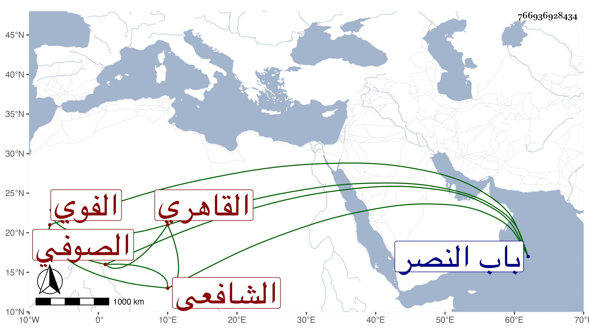

0902Sakhawi.DawLamic.ITO20230111-ara1.EIS1600.766936928434
Biography ID: 766936928434
995
محمد بن أحمد بن أبي بكر الشمس أبو الفتح بن الشهاب الفوي ثم القاهري الشافعي الصوفي . ولد قبل التسعين وسبعمائة تقريبا وحفظ القرآن وسمعت أنه اشتغل في المنهاج يسيرا وصحب إبراهيم الأدكاوي والشمس محمد بن علي بن عافية بن أحمد الغزالي والزين أبا بكر المداوي وآخرين وقرأ والمرسلات والتي تليها على أحمد بن علي بن موسى الأدكاوي الصوفي وتلقن منه ذكرا مخصوصا وقال إنه تلقنه من النبي صلى الله عليه وسلم في المنام ، واختص بشيخه الأول وانتفع بصحبته وبسلوكه وإرشاده وعرف بالخير والصلاح ، وعمل رسالة سماها سلاح المسالك وسد المهالك في علم الطريق لأهل الأمانة والتصديق وتصدى للإرشاد فأخذ عنه الأكابر فمن دونهم وكنت ممن صحبه وتلقن منه الذكر على طريقتهم ، وحج وجاور غير مرة آخرها في سنة ثلاث وستين وكان خيرا كثير الصمت حسن السمت ملازما للعبادة والتلاوة منجمعا عن الناس مذكورا بالصلاح له أتباع يعتقدونه ويعظمونه ويؤثرون عنه الكرامات مما أوردت بعضها في التاريخ الكبير . مات في مساء يوم السبت تاسع عشري ربيع الأول سنة ست ودفن بتربة الحلاوي بالقرب من الروضة ظاهر باب النصر رحمه الله ونفعنا به .
